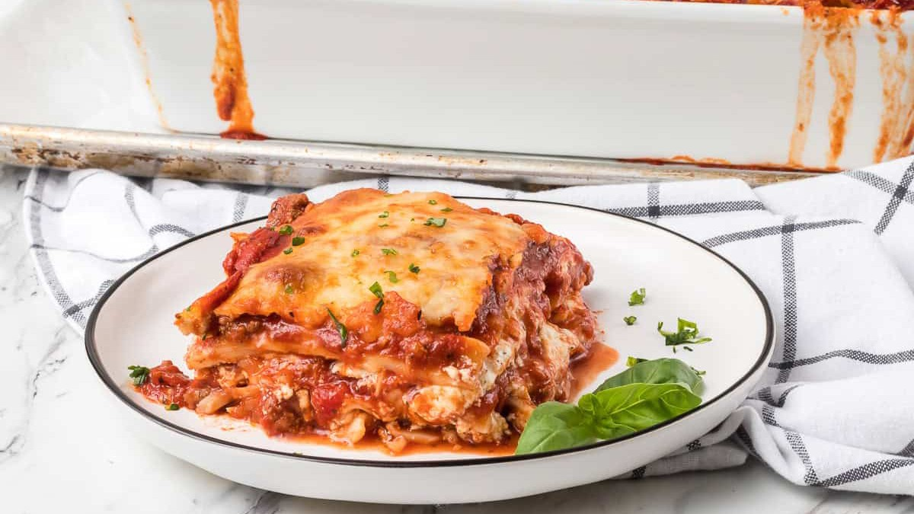

Lasagna Recipe with Cottage Cheese

This quick and easy lasagna recipe with cottage cheese is the perfect comfort food for a hearty meal! Make it in advance so you can heat it up any time you want a hot home-cooked meal!
Ingredients
Meat Sauce
- 2 tablespoons olive oil
- 1 lb ground beef
- 1 large yellow onion or enough for one cup
- 3 cloves garlic, minced
- 28 ounces tomato puree
- 15 ounces tomato sauce
- 14.5 ounces diced tomatoes
- 6 ounces tomato paste
- 2 tablespoons sugar
- 1 tablespoon Worcestershire sauce
- 2 teaspoons basil
- 1 ½ teaspoons salt
- 1 teaspoon oregano
- ¼ teaspoon black pepper
- 2 bay leaves
- 1 box lasagna noodles
Cottage Cheese Mixture
- 1 large egg
- 30 ounces full fat cottage cheese
- 1 cup grated Parmesan cheese divided
- 1 tablespoon dried parsley
- 4-5 cups shredded mozzarella
Steps
Meat Sauce
- Heat a large pot or Dutch oven on medium heat. Add the olive oil.
- Add the onion and garlic and saute until soft, about 3 minutes.
- Add the ground beef and cook until brown.
- Add the puree, sauce, diced tomatoes, paste, sugar, basil, salt, oregano, pepper, and bay leaves. Stir until well combined.
- Reduce heat. Cover and simmer for at least 45 minutes, stirring frequently.
- Preheat oven to 350° F.
- Place a few long sheets of wax paper onto a clean work surface, and spray with cooking spray. In a large pot, cook lasagna noodles according to manufacturer’s directions. Drain and place noodles flat onto the wax paper while the sauce continues to cook.
Cottage Cheese Mixture
- In a large bowl, beat the egg.
- Add the cottage cheese, 3/4 cup of the Parmesan cheese, and parsley. Mix until well combined.
Lasagna Assembly
- Generously coat a deep 9 X 13-inch baking dish with cooking spray, and layer a rimmed baking pan with tin foil. Remove the bay leaves from the meat sauce.
- Place a thin layer of sauce on the bottom of the pan.
- Put 4 lasagna noodles on top of the meat sauce.
- Spread 1/3 of the cottage cheese mixture over the noodles.
- Completely cover with about 2 cups of sauce, making sure to spread the sauce into the corners and along the edges.
- Sprinkle 1/2 cup of the mozzarella over the sauce.
- Place 4 lasagna noodles over the mozzarella and repeat the order of layering.
- Place lasagna noodles over the final cottage cheese/mozzarella layer and cover with sauce.
- Sprinkle remaining mozzarella and parmesan cheeses over the sauce.
- Place the pan of lasagna onto the foil-lined baking sheet. This allows for easier clean-up should it bubble over in the oven or spill over when cutting into at the table.
- Bake for 50 minutes or until bubbly. If you should notice cheese beginning to brown, cover lightly with a sheet of aluminum foil.
Note: To prevent a watery lasagna, be sure to use a full-fat cottage cheese.
source
Home